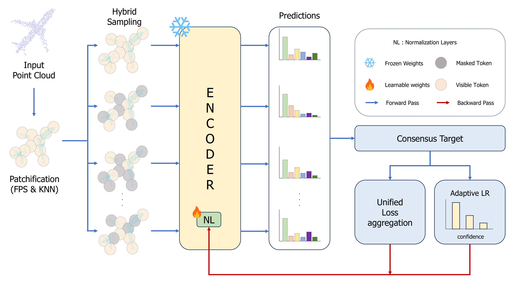

Overview of the proposed MAMVI framework. MAMVI eliminates sequential optimization by unifying multi-view adaptation into a single backward pass based on multi-view consensus, coupled with a hybrid masking strategy and confidence-based adaptive learning rate.
3D point cloud models suffer significant performance degradation under distribution shifts caused by sensor noise, occlusions, and environmental changes. Test-time adaptation (TTA) has emerged as a practical paradigm for mitigating this issue during inference. Recently, leveraging multi-view augmentation has shown promise in improving 3D TTA performance. However, existing multi-view approaches are often constrained by sequential optimization that treats each view independently. This sequential optimization leads to substantial inference latency due to repetitive optimization steps, making real-time adaptation impractical.
To address this, we propose Masked Multi-View Test-Time Adaptation (MAMVI), which replaces sequential optimization with a unified single-step adaptation. Specifically, MAMVI utilizes a hybrid masking strategy that combines fixed ratios for stability with Beta-distributed sampling for diversity. By aggregating losses across multiple views, MAMVI performs adaptation through a single backward pass based on multi-view consensus. Additionally, a confidence-based adaptive learning rate is used to dynamically adjust the adaptation intensity for each sample. Extensive experiments on ModelNet-40C, ShapeNet-C, and ScanObjectNN-C demonstrate that MAMVI achieves state-of-the-art accuracy on ShapeNet-C and ScanObjectNN-C. Moreover, it remains competitive on ModelNet-40C while delivering 4.9–8.9 times faster inference, making it highly suitable for real-time applications.
If you find MAMVI useful in your research, please consider citing:
@inproceedings{kong2026mamvi,
title={MAMVI: 3D Test-Time Adaptation via Masked Multi-view Point Clouds},
author={Kong, Inseok and Jung, Geunyoung and Jung, Jiyoung},
booktitle={International Conference on Pattern Recognition},
pages={348--362},
year={2026},
organization={Springer}
}